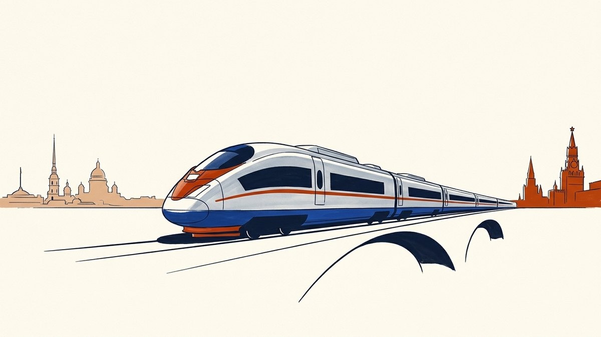
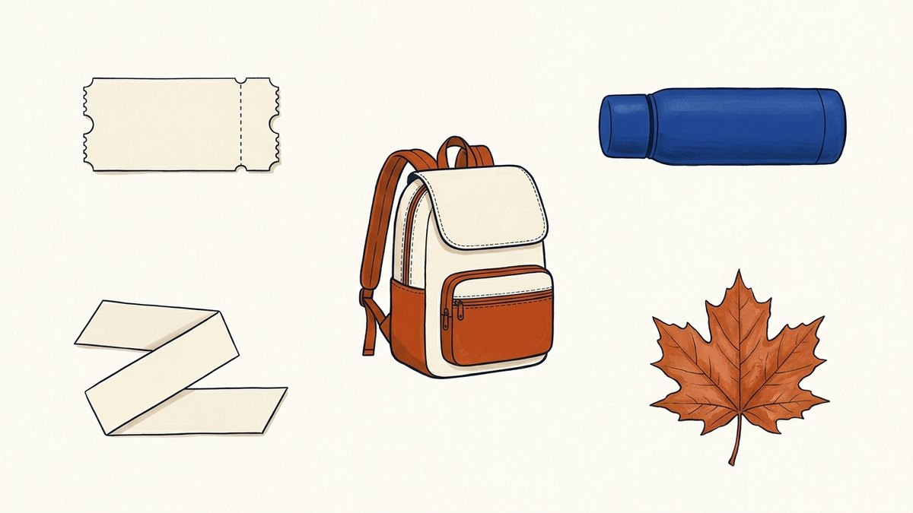
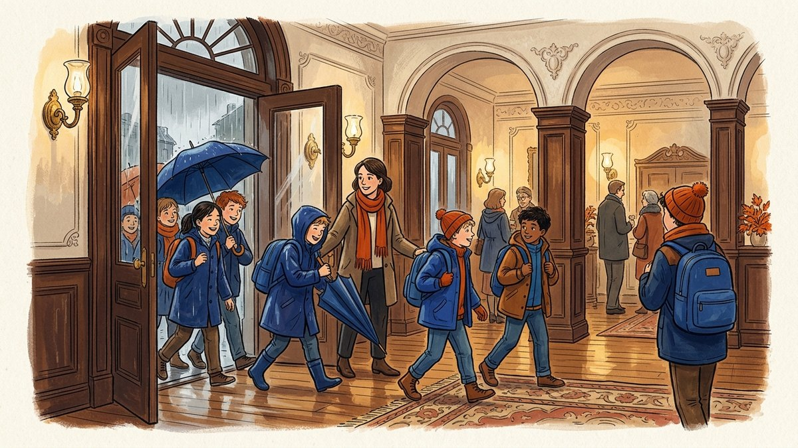
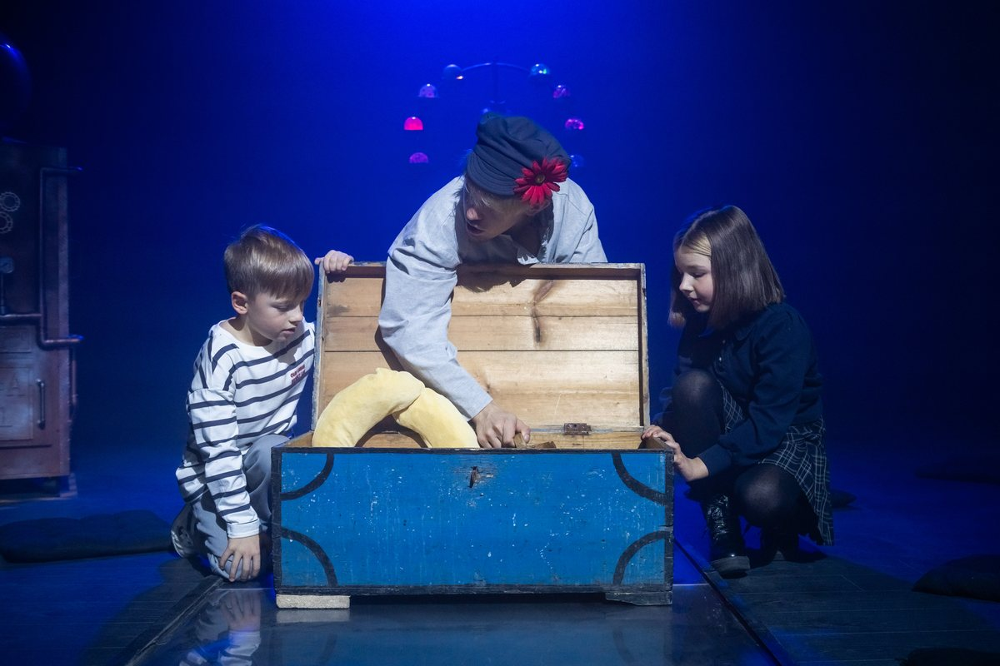
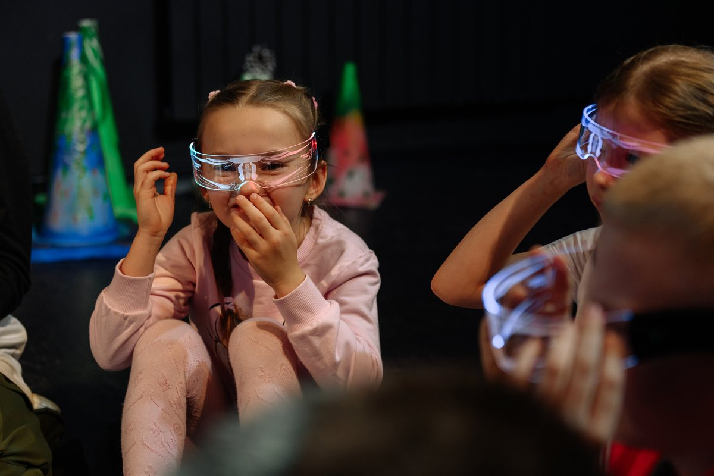

Поездка класса из Санкт-Петербурга в Москву на Сапсане: как не потерять день в пробках

Почему петербургские классы чаще всего сбивают график в первые два часа
Редакция spbrus.news изучила типовые сценарии однодневных и двухдневных школьных туров из Санкт-Петербурга в столицу. Главный враг плотного расписания при приезде на Сапсане или ночном поезде скрыт не в музеях, а в привычке фрахтовать туристический автобус на весь день с ожиданием у вокзала.
На карте центр Москвы выглядит компактно, однако утренний и дневной выезд по набережным или Садовому кольцу легко прибавляет к программе сорок-шестьдесят минут простоя. После четырёх часов в кресле поезда лишний час в дорожном заторе изматывает школьников ещё до первого шага на экскурсию. Поэтому координаторы всё чаще меняют автобусный трансфер на прямой переход от Ленинградского вокзала по метро до пешей площадки.
Суточная дуга поездки на Сапсане: сравните 1-дневный и 2-дневный ритм
Переключайте формат выезда, чтобы увидеть реальные окна времени на дорогу, 90-минутное занятие и обед группы без спешки на обратный рейс.
Что проверяет родительский комитет за неделю до поезда
Школьный класс в поезде «Сапсан» чаще всего размещают компактным блоком в одном вагоне, где у сопровождающих все ребята под контролем. На верхних полках удобно оставлять сменную одежду, а в руках у детей должен оставаться только лёгкий рюкзак с водой, сухим перекусом и документами: на перроне Ленинградского вокзала группа с пустыми руками гораздо быстрее спускается в метро на «Комсомольскую».
Чтобы на перроне Московского вокзала в Петербурге не собирать справки и воду в последний момент, организаторы сверяют базовые мелочи по короткому списку вещей. Школьнику в поезде неудобно с большим чемоданом или тяжёлой сумкой через плечо: на 1-2 дня хватает лёгкого городского рюкзака с документами, питьевой водой или небольшим термосом и пауэрбанком.

- Зафиксировать точное число учеников и сопровождающих до покупки групповых железнодорожных билетов.
- Выбрать один основной закрытый слот 90 минут и не пытаться вместить три музея подряд в один день.
- Уточнить у площадки наличие собственного гардероба, чтобы не носить зимние куртки в рюкзаках.
Страховка от петербургского и московского дождя внутри ТРЦ «Филион»
Школьные каникулы в октябре, ноябре и марте часто приносят сырость и порывистый ветер в обеих столицах. Парковые усадьбы или открытые аллеи ВДНХ в такой день превращают поездку в испытание мокрой обувью, после которой детям приходится переобуваться прямо в креслах обратного поезда.

Сезонная готовность маршрута без уличных переходов
Встроенная диаграмма показывает реальные инфраструктурные параметры, которыми отличаются сезоны каникул.
Почему приезжей группе важно единое пространство без деления
Когда школьники едут в чужой город, класс привык держаться рядом. Если на входе в популярный музей группу из 30 учеников просят разделиться по пятнадцать человек с получасовой разницей, вторая подгруппа теряет время, а график обеда перед поездом рушится. На площадке в ТРЦ «Филион» вместимостью от 5 до 45 человек такого деления нет: вся группа заходит вместе.

Как удерживается интерес школьников после долгой дороги в поезде
После раннего подъёма на первый поезд из Петербурга ученики устают от долгих лекций с датами в тихих залах. Иммерсивная смена сцен, возможность потрогать исторические предметы и пообщаться с героями Профессором и Демьяном возвращает бодрость уже на пятнадцатой минуте. Для разных возрастов предусмотрены отдельные сценарии: от «Тайны потерянных бусин» с калачом XVI века до «Другого Детства» и «Голоса города».

Сравнение ключевых площадок Москвы для групп из Петербурга
Редакция собрала параметры популярных московских точек по вместимости класса и зависимости от погоды. Актуальное расписание и цены сторонних объектов уточняют на их официальных сайтах.
| Площадка | Путь от вокзала / метро | Размер группы за заход | Работа в непогоду и обед | Как уточнять условия |
|---|---|---|---|---|
| Точка Счастья. Дети (ТРЦ «Филион») | Метро от Ленинградского вокзала до «Фили» + 3-5 мин | 5-45 учеников единым составом | Крытый ТРЦ, гардероб, фудкорт, санузлы | Расчёт под группу по +7 (495) 145-35-00 (точкасчастья.рф) |
| Оружейная палата Кремля | Пешком по центру от м. «Библиотека им. Ленина» | Лимит по сеансам, крупные классы часто делят | Питание за пределами территории, строгий досмотр | Уточнять на сайте Музеев Кремля |
| Третьяковская галерея | От м. «Третьяковская» по Лаврушинскому переулку | Обычно группы до 15-20 чел. на одного гида | Внутри тепло, перерыв на обед планируют отдельно | Уточнять на официальном сайте галереи |
| Московский планетарий | 5-7 мин пешком от м. «Баррикадная» | Большой звёздный зал, но интерактивы по подгруппам | Есть собственное кафе и крытые уровни | Уточнять на сайте Планетария |
Частые вопросы родкомов Санкт-Петербурга
Как успеть культурную программу в Москве за один день на Сапсане?
Оптимально выстроить день вокруг одного гарантированного крытого слота на 90 минут в пешей доступности от метро. В этом случае класс не теряет часы в автобусных пробках между Ленинградским вокзалом и ЗАО.
Почему для петербургского класса важно не делиться на подгруппы?
При жёсткой привязке к обратному поезду разведение 30 учеников по двум сеансам сдвигает весь тайминг обеда и переезда на вокзал. Площадки вместимостью 5-45 человек принимают класс целиком.
Куда удобно пойти группой в дождливый день?
Под крышей без уличных аллей принимают «Точка Счастья. Дети» в ТРЦ «Филион» (Багратионовский пр-д, д. 5, м. «Фили»), а также крытые павильоны крупных музеев по предварительной записи.
Где ученики и сопровождающие могут пообедать рядом с программой?
На Багратионовском проезде внутри ТРЦ «Филион» сразу после 90-минутной программы работает фудкорт с гардеробом и санузлами, что удобно для групп с Ленинградского вокзала.
Какую программу выбирают для приезжих классов из Петербурга?
Школьникам 1-6 классов подходят историческая игра «Москва. Тайна потерянных бусин» с калачом XVI века или сезонная «Масленица наоборот» и «Новогодняя шоу-игра», а 4-7 классам формат «Другое Детство».
Как уточнить расчёт на группу из Петербурга?
Для площадки «Точка Счастья. Дети» индивидуальный расчёт под точное число учеников и дату прибытия выполняют администраторы по телефону +7 (495) 145-35-00.